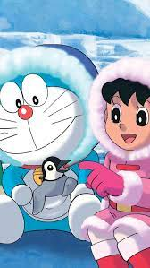
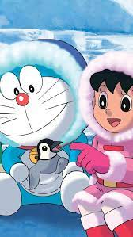

hello google
 


my name is taranpreet kaur
mankoo
It is said that in Ulthar which lies beyond the river Skai, no man may kill a cat; and this I can verily believe as I gaze upon him who sitteth purring before the fire. For the cat is cryptic, and close to strange things which men cannot see. He is the soul of antique Aegyptus, and bearer of tales from forgotten cities in Meroe and Ophir. He is the kin of the jungles lords, and heir to the secrets of hoary and sinister Africa. The Sphinx is his cousin, and he speaks her language; but he is more ancient than the Sphinx, and remembers that which she hath forgotten.